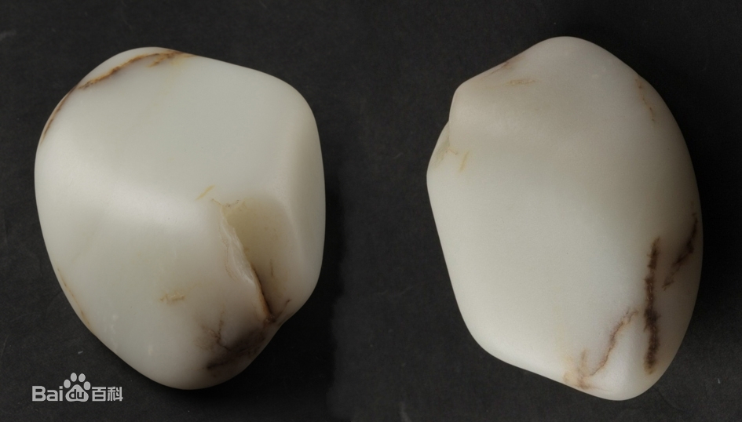
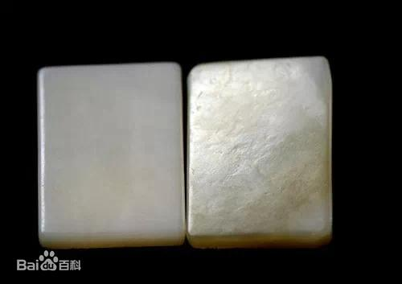
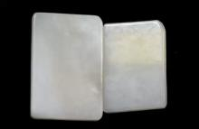
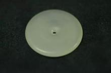
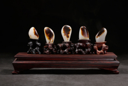
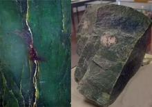
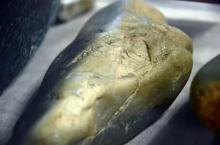
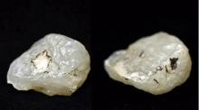

新疆和田玉
传统所称的和田玉产于新疆和田，整体品质偏高，因此市场价格也相对高于其他产地，尤其是优质的子料。新疆白“子料”外形呈鹅卵状，一般块度较小，体态光滑，质地紧密，颜色以白色为最佳，外皮是子料的重要外观特征。新疆白玉“山料”块度大，有不规则棱角，质地也比子料粗，颜色以青白、灰白为多。“戈壁料”大小不等，多为片状，表面光滑，常带有波纹面和大小不等的沙孔，质地细腻、紧密、坚硬。“山流水”与“戈壁料”在外形和质地上有类似地方，但块度稍大，颜色较白。
和田玉
“中国四大名玉”之一（其三为陕西蓝田玉、辽宁岫玉和河南独山玉）。传统狭义范畴特指新疆和田地区出产的玉石，以和田“子料”为代表闻名于世；广义的和田玉指软玉（真玉）。

俄罗斯白玉
俄罗斯白玉在中国市场出现的时间不长，与新疆白玉在成因、产状、矿物成分、杂质组分、结构、外观上颇为相似，但也存在一定的差异。俄料的子料很少，大多为山流水和山料。与新疆子料的砂眼麻皮坑原生皮和色沁原生皮不同，俄罗斯子料为毛口表皮，皮色也没有新疆子料丰富。质地方面，俄罗斯子料细腻、温润，油蜡性好。俄罗斯山料的外皮特点突出，包含“糖皮白玉”、“白皮白玉”、“灰皮白玉”。俄罗斯山料产量大，块度也大，透明度较差，质地不够细糯，雕刻中易产生崩口。
矿物组成
和田玉属透闪石玉石，透闪石属闪石族矿物中的钙质闪石亚族，是透闪石铁阳起石系列矿物中的一员，其化学式为：Ca2(Mg,Fe2+)5[Si8O22](OH)2，镁和铁间可呈完全类质同象代替。

青海白玉
青海的白玉矿区中只出产有山料，产出量是青海软玉中最大的。
青海白玉块度较大，形状不规则，多棱角，大面较整齐，颜色多为灰白蜡白色，透明度高于新疆白玉和俄罗斯白玉，质地呈毡状、束状结构，常见絮状棉绺或黑褐色翳状斑点。
晶系
和田玉主要组成矿物为透闪石和阳起石，都属单斜晶系。这两种矿物的常见晶形为长柱状、纤维状、叶片状，和田玉是这些纤维状矿物的集合体。

韩国白玉
软玉的原生矿床在韩国也有分布，有一定的白玉产出，中国市场俗称为“韩料”，也是近些年才在国内多起来。“韩料”整体的品质都偏低，颜色多呈青黄色或淡淡的棕色，蜡质光感明显，质地结构也相对松散。
不同产地的和田玉在外形、块度、外皮、颜色、透明度和质地等几个方面既有相似性，有存在一定的差异，“韩料”一般属于和田玉中的低档料。
结构
和田玉的主要结构为变晶结构，包括毛毡状隐晶质变晶结构、显微纤维一隐晶质变晶结构、显微纤维变晶结构、显微片状一隐晶质变晶结构、显微片状变晶结构和显微放射状（帚状）变晶结构。
精选图片

子料

山料

山流水

戈壁料